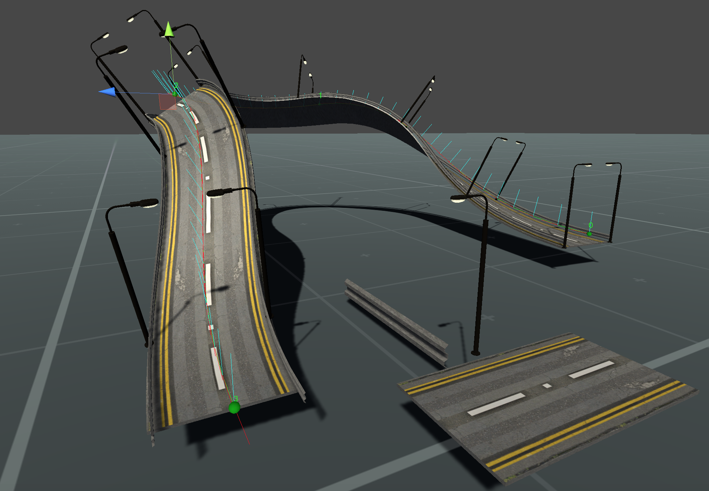
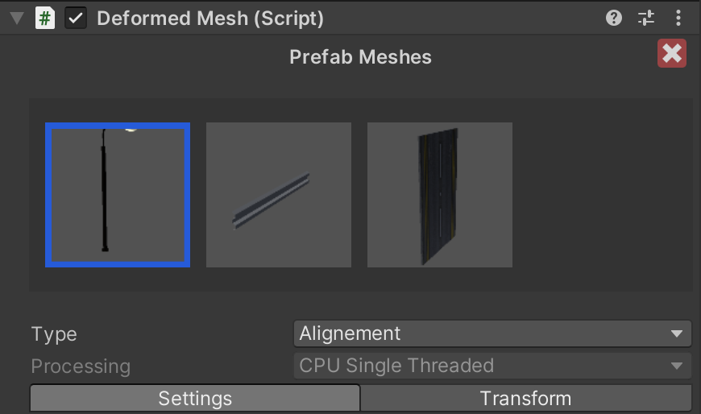
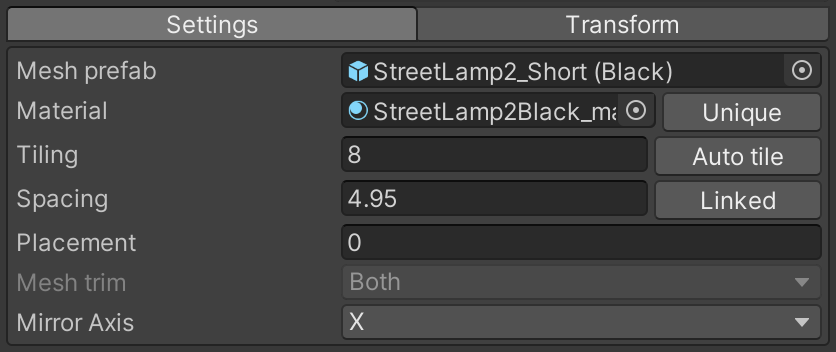
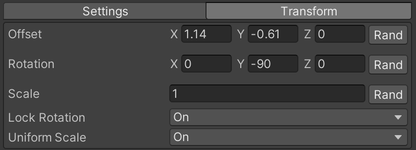
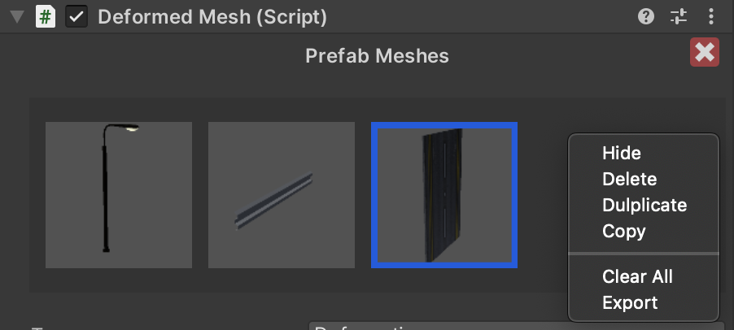

Mesh Deform
A custom meshes procedural mesh generation modifier for Spline Plus.

Features
- Custom meshes combination.
- Modes: Alignment / Deformation.
- Procedural mesh generation on all spline branches.
- Materials sharing.
- Processing: CPU Single thread - CPU Muli threading - GPU.
- Translation, rotation, scale with randomization.
- Node Scale (Taper effect).
- Node Normal.
- Mirroring.
- Mesh trimming.
- Copy/Past/Duplicate prefab meshes between branches.
- API to generate procedural mesh at runtime.
Inspector

| Variables | Description |
|---|---|
| Delete | Delete the Deformed Mesh modifier "Deformed Mesh Component". |
| Prefab meshes area | This contains a list of prefab meshes of the currently selected branch, Settings bellow are for the selected prefab mesh highlighted in blue. |
| Type | Mesh deformation type used , Alignment: this aligns the meshes along the spline branches without performing a deformation, Deformation: this alings the meshes along the spline branches and perform deformation as well, |
| Processing | The processing method used, CPU Single threaded - CPU Multi threaded - GPU. |
Settings

| Variables | Description |
|---|---|
| Mesh Prefab | The prefab mesh game object used. |
| Materials | Prefab mesh material used. |
| Tiling | Define how many times you want the mesh to be repeated along the spline. Auto tiling: Automatically calculates how many meshes from the selected prefab mesh fits into the spline branch while taking into consideration the spacing value. |
| Spacing | Control the space between the meshes of the prefab mesh. Linked/ Unlinked: This links the spacing of all the other prefab meshes to the currently selected prefab mesh,This helps you move prefab meshes all at once instead of going through them one by one |
| Placement | Used to offset the meshes on the spline branch direction. |
| Mesh trim | Mesh to not extend beyond the branch distance limits, available options: None, Left, Right, Both |
| Mirror axis | Create a mirror effect on a defined axis, you can use rotation and translation to create the mirroring offset. |
Transform

| Variables | Description |
|---|---|
| Offset | Translate the proceduraly calculated meshes. Rand : Create random Offset Seed: Change the randomization seed. |
| Rotation | Rotate the proceduraly calculated meshes. Rand : Create random Rotation Seed: Change the randomization seed. |
| Scale | Scale the proceduraly calculated meshes Rand : Create random Scale behaviour Seed: Change the randomization seed. |
| Lock Rotation | Limit the rotation on the Y axis only. |
| Uniform Scale | Enable/Disable uniform scale. |
Items Menu
Right click in your prefab meshes area to open up the items menu for the selected prefab mesh.

| Variables | Description |
|---|---|
| Hide/Unhide | Hide/unhide the selected prefab mesh. |
| Delete | Delete the selected prefab mesh. |
| Duplicate | Duplicate the selected prefab mesh. |
| Copy/Past | Copy the selected prefab mesh. To past the copied prefab mesh, right click on an empty area in the prefab meshes section. |